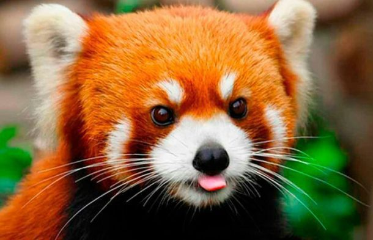

O panda vermelho
Sobre os Pandas Vermelhos
O panda-vermelho, também conhecido como panda-ruivo ou guaxurso, é um pequeno mamífero arborícola e a única espécie do gênero Ailurus. É nativo das regiões montanhosas do Himalaia e do sul da China, e está associado às florestas temperadas de altitude e a bambuzais.
Habitat dos Pandas Vermelhos
Os pandas-vermelhos são encontrados em áreas de florestas de bambu nas montanhas da China central. Eles preferem áreas com vegetação densa e acesso a fontes de água.
Dieta dos Pandas Vermelhos
Os pandas-vermelhos são principalmente herbívoros e sua dieta consiste principalmente de bambu. Entretanto, por ser omnívoro, pode ingerir ovos, pássaros, insetos e pequenos mamíferos.
Estado de Conservação
O panda-vermelho está classificado como "em perigo" pela União Internacional para a Conservação da Natureza (IUCN) devido à perda de habitat e baixa taxa de reprodução.
